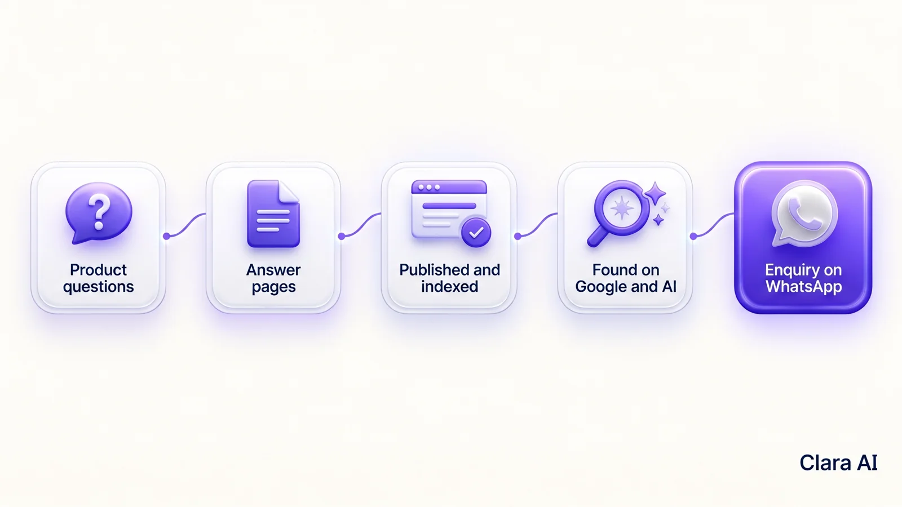

An AI SEO agent for manufacturers and distributors publishes clear, factual pages every day that answer what your buyers search before they call: which grade, which specification, which supplier. It then asks Google to index each page, tracks what brings enquiries and sends the interested buyers to you on WhatsApp.
Industrial buyers rarely start with a phone call. They search for a product, compare specifications, check who stocks it and shortlist two or three suppliers, and now many also ask ChatGPT or Gemini the same questions. If your website only lists products and a contact form, you are missing from that early research.
Most B2B SEO advice is written for software companies. Manufacturers and distributors have a different problem. Your products are technical, your catalogue is large, and the questions buyers ask are specific. A purchase manager does not search for your company name. They search for the thing they need to solve.
That is the gap an agent fills. It does the publishing work that nobody on a small sales team has time for.
The agent builds a cluster of pages around the products you want more enquiries for. It works from your approved facts, datasheets and examples, never from guesses.

Each page opens with the answer, uses headings written as questions and links to your main product pages. That structure is what both Google and AI assistants find easiest to quote.
Buyers now ask AI tools things like "which supplier of this material delivers across India" or "what is the difference between these two grades". AI assistants tend to cite pages that are clear, specific and already visible in search. Google's guide to AI features and your website says the same SEO basics apply to its AI Overviews, so good foundations help in both places.
| Typical catalogue site | Site run by an AI SEO agent | |
|---|---|---|
| Product pages | Name, photo, PDF | Plain-language answers around each product |
| Buyer questions | Handled on calls | Answered on the site, ready to be found |
| Publishing | When someone has time | Every day on a plan |
| Tracking | Occasional traffic check | Weekly clicks, impressions, rankings and enquiries |
It depends on what you need. A writing tool gives you a draft, but someone on your team still has to research, publish and track. An agency can cover everything but usually works on a monthly report rhythm. An agent runs the full loop daily and reports weekly. We compare the three in more detail in AI SEO agent vs SEO agency vs SEO tool.
The right choice also depends on your market. If you sell into India, see our guide to SEO for B2B companies in India. For the basics, read what is an AI SEO agent.
SEO takes time, and anyone promising page one next week is guessing. Google's SEO starter guide says changes can take from several hours to several months to show. A realistic plan looks like this:
On our own site, organic sessions rose 28% from 10–25 Oct vs 24 Sep–9 Oct 2026, with a new post published each day. You can read the full story in our AI SEO agent case study.
We start with a short call about what you make or distribute, the buyers you want and the products that matter most. You share datasheets and approved facts once, we agree the topics and tone, and the agent runs daily with a simple weekly update. If you also want to reach buyers directly, you can pair it with our AI LinkedIn Outreach Agent.
It is a fit if you sell to businesses, each customer matters and your buyers search before they call. It is not a fit if you only want a one-off catalogue rewrite. Tell us what you sell and we aim to show you a first demo within 7 days.